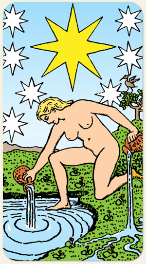

A esperança, a inspiração e a serenidade. Ela representa a conexão direta com o divino e a recuperação da fé em si mesmo e no universo. É o momento em que a alma se despe de suas proteções para se banhar nas águas da renovação, confiando plenamente no fluxo da vida.
Positivo: Beleza, glória, sensualidade, orientação, esperança, amigos ou grupos que ajudam, pessoas de referência, purificação, novos ares.
Negativo: Desorientação, desânimo, ausência de brilho, ilusão, desilusão, vulgaridade na nudez, ser falso, remorso, é o negativo da água, a lamúria, o lamento pela Torre derrubada. A pessoa aparece nua depois de ter perdido tudo na Torre.
Reflexo: A dualidade entre o que é real e o que é percebido; a projeção das nossas sombras no mundo exterior.
Seios Fartos: Simbolizam nutrição, fertilidade, maternidade e a abundância da natureza que sustenta a vida.
Símbolos: Estrela, Nudez, Lago, Ânfora, Montanha, Pássaro, Reflexo.
Cores: Amarelo, Azul, Verde, Branco.
Elemento: Água.